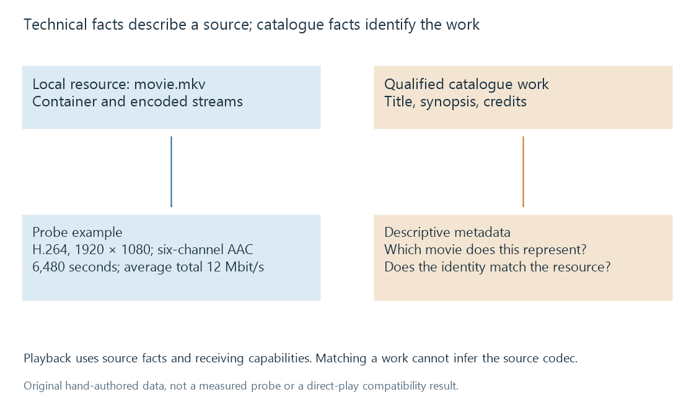

Technical analysis of library media
Technical media analysis inspects a resource’s container, streams and timing to supply playback facts independently of its catalogue description.
Technical analysis asks what a particular media resource contains. It can identify a container, enumerate streams, read codec parameters and interpret timing information. Those facts support track selection, duration displays and playback decisions.
A catalogue provider answers another question: which movie, episode or recording does the resource represent? A correct film synopsis cannot establish that the local file contains HEVC rather than H.264, or that its second audio track is present.

Probing reads structured evidence
FFprobe is a useful reference tool for this distinction. Its documented options can expose format, stream and chapter information:
ffprobe -v error -show_format -show_streams -show_chapters -of json "movie.mkv"
This is a read-only inspection command, not a requirement to process a library or change the file. The information available depends on the format, resource and analysis performed.
The following hand-authored fragment illustrates output fields. It is not a measurement from an actual movie:
{
"streams": [
{
"index": 0,
"codec_type": "video",
"codec_name": "h264",
"width": 1920,
"height": 1080,
"avg_frame_rate": "24000/1001",
"time_base": "1/24000"
},
{
"index": 1,
"codec_type": "audio",
"codec_name": "aac",
"sample_rate": "48000",
"channels": 6
}
],
"format": {
"duration": "6480.000000",
"size": "9720000000"
}
}
There are two streams with different roles. The audio channel count belongs to the audio stream; the video dimensions belong to the video stream. The format duration and size describe the resource-level example.
Derive quantities at the right scope
From the illustrative format values:
9,720,000,000 bytes × 8 ÷ 6,480 seconds
= 12,000,000 bits per second
= 12 Mbit/s average total bitrate
That average includes everything counted in the file size, not only the video elementary stream. A separately reported video bitrate can therefore differ without contradiction. Variable bitrate also means the instantaneous delivery demand can exceed the average.
The video's frame-rate ratio is approximately 23.976 frames per second. Its time base says one timestamp unit is 1/24,000 second. These are not the same property.
For a hypothetical constant-frame-rate sequence with that frame rate, an interval of 1,001 such timestamp units represents one frame interval: 1,001 ÷ 24,000 seconds. The time base alone does not prove constant frame cadence or supply every frame's actual timestamp.
Reading headers is not decoding the entire programme
A probe can read container structures and enough stream data to identify relevant parameters. More detailed packet or frame analysis can inspect other evidence. Successfully displaying a stream list does not prove that every later packet is intact or every picture can be decoded.
Likewise, an extension is only a naming clue. An MKV can carry several possible video and subtitle formats. The actual stream descriptions provide stronger evidence than the suffix.
A duration can be declared in container information, derived from timestamps, or unavailable at the inspected scope. In incomplete recordings or resources with different stream endpoints, one reported number may not cover every question. Missing information should remain missing rather than being silently treated as zero.
Descriptive tags and playback facts
Container tags can carry titles and language labels. These are descriptive claims accompanying the stream; they are not conclusions that audio speech was recognized in that language.
Colour-transfer metadata can describe an intended signal interpretation. Its presence is different from visually judging a frame. A six-channel audio stream supplies a count; more detailed layout information is needed to determine the channel positions.
Emby's MediaSourceInfo exposes source-level information used by clients. A product can normalize or derive fields when importing probe data, so its displayed value is not necessarily a verbatim copy of every tool field.
Analysis supports a playback decision
A file can be valid and still require conversion for a particular device, display or delivery path. Codec/profile support, subtitles, audio capabilities and available bandwidth contribute to that decision.
For the illustrative source, the resulting decision starts with H.264 video at 1920 × 1080, six-channel AAC audio and an average resource bitrate of 12 Mbit/s. The receiving playback path then determines which of those properties it can use directly and which require conversion.
See Also
- Streams and Tracks
- Time Bases
- Bitrate
- Video Keyframes and Random Access
- Library scanning and catalogue reconciliation